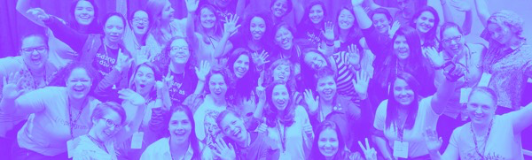

BLOG POSTS
Mulheres incríveis estão se superando no mercado Tech
Ao todo, somos apresentados a 30 mulheres, que tornaram a sua luta peça fundamental na construção do mundo.O projeto conseguiu aqui reunir variadas faixas etárias e diferentes áreas de atuação.
